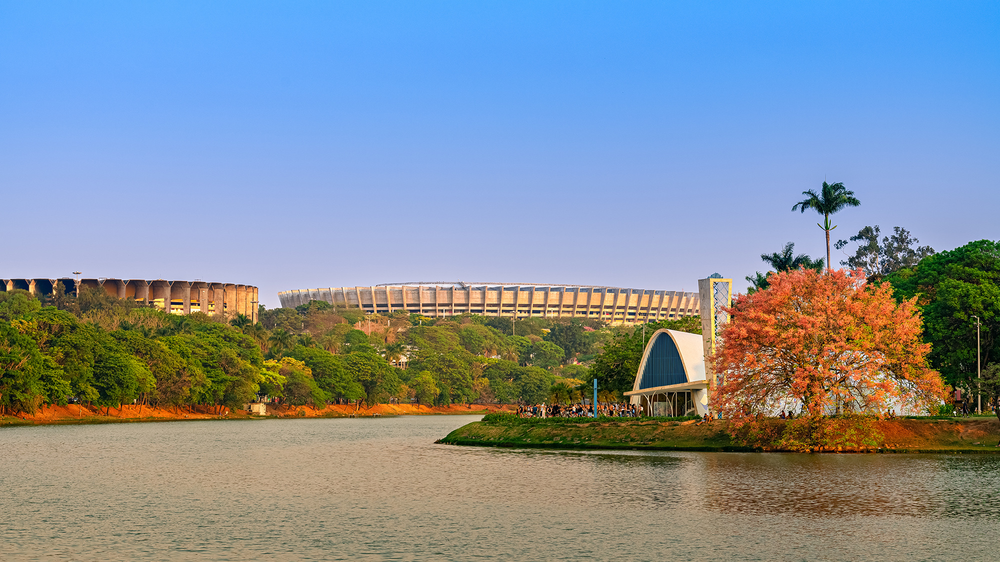

A ideia para a idealização do conjunto arquitetônico da Pampulha surgiu na década de 1940, quando Juscelino Kubitschek, então prefeito de Belo Horizonte, quis criar um centro de lazer e turismo moderno em torno da Lagoa da Pampulha, que estava sendo construída na época. Ele encomendou os projetos ao arquiteto Oscar Niemeyer, que projetou um conjunto de edifícios, incluindo um cassino (que se tornou o Museu de Arte da Pampulha), uma igreja, uma casa de baile e um clube
Origens da ideia
Visão moderna de JK: Juscelino Kubitschek, ao assumir a prefeitura, viu o potencial da área como um núcleo de atração para a cidade, com uma âncora para o lazer e o turismo
Represa e Lagoa: A criação da Lagoa da Pampulha começou em 1936, sob a gestão do prefeito Otacílio Negrão de Lima, para evitar enchentes e melhorar o abastecimento da cidade, com a construção da represa para formar a lagoa
A criação do conjunto arquitetônico O convite a Niemeyer: JK convidou o jovem e já reconhecido arquiteto Oscar Niemeyer para projetar um conjunto de edifícios modernistas ao redor da lagoa artificial. Objetivo:O conjunto visava consolidar Belo Horizonte como um centro de lazer e turismo e colocá-la no cenário da arquitetura moderna internacional. Inauguração:O conjunto, com obras de Niemeyer, paisagismo de Roberto Burle Marx e painéis de Cândido Portinari, foi inaugurado em 1943.Assim, a Pampulha surgiu como um símbolo do desenvolvimento e da modernização de Belo Horizonte, conectando a arquitetura, a arte e a paisagem de forma inédita.
Curiosidade:"Pampulha" tem duas significações principais: uma origem etimológica no latim pampanus (haste de videira) e um significado geográfico e cultural, referindo-se à Lagoa da Pampulha e ao Conjunto Arquitetônico da Pampulha em Belo Horizonte, MG, um marco da arquitetura moderna e Patrimônio Cultural da Humanidade
história